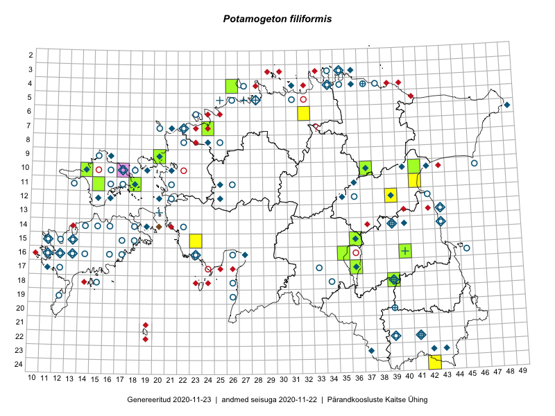

Potamogeton filiformis — niitjas penikeel
Potamogetonaceae :: Potamogeton filiformis Pers. (234); Potamogeton filiformis f. rivicolus Hagstr. (2)

Kaart põhineb 238 kirjel:
vaatlusi 66
herbaareksemplare 170
ELFi kirjeid1 1
EELISe kirjeid2 1
Taime kaasaegsed ja ajaloolised leiukohad asuvad 107 ruudus.
Tingmärgid ja leidudega ruutude arvud periooditi uues (u) ja 2005 andmestikus (v)
| █ | vahemik | u3 | v4 |
|---|---|---|---|
| █ | 2006–2020 | 19 | – |
| ◆/◇ | 1971–2005 | 50 | 87 |
| ○ | 1921–1970 | 60 | 18 |
| + | kuni 1920 | 10 | 0 |
| × | hävinud | – | 0 |
| ? | kaheldav | – | 1 |
| Ruut | Leidja(d) | Leiuaeg | Kirje |
|---|---|---|---|
| 10-37 | Peedu Saar, Ott Luuk | 2019-06-10 | TAA0149530: Potamogeton filiformis Pers. |
| 10-37 | Peedu Saar, Ott Luuk | 2019-06-10 | TAA0149531: Potamogeton filiformis Pers. |
| 07-24 | Thea Kull, Kaili Kattai | 2018-07-04 | TAA0142395: Potamogeton filiformis Pers. |
| 11-15 | Ott Luuk, Peedu Saar | 2017-09-13 | TAA0145612: Potamogeton filiformis Pers. |
| 11-15 | Ott Luuk, Peedu Saar | 2017-09-13 | TAA0145613: Potamogeton filiformis Pers. |
| 11-18 | Ott Luuk, Peedu Saar | 2017-09-12 | TAA0145614: Potamogeton filiformis Pers. |
| 04-26 | Ott Luuk | 2017-07-20 | TAA0142872: Potamogeton filiformis Pers. |
| 16-40 | Ott Luuk | 2017-07-09 | TAA0142867: Potamogeton filiformis Pers. |
| 10-41 | Ott Luuk, Eerik Leibak | 2016-08-04 | TAA0145580: Potamogeton filiformis Pers. |
| 09-20 | Kadi-Liis Kesler | 2015-07-18 | TAA0148327: Potamogeton filiformis Pers. |
| 10-14 | Tõnu Ploompuu | 2015-07-11 | TAM0122516: Potamogeton filiformis Pers. |
| 17-36 | Helle Mäemets, Mare Leis, Malle Timm | 2015-06-25 | ruut/ala: Potamogeton filiformis Pers. |
| 16-35 | Helle Mäemets | 2014-09-08 | TAA2004163.A: Potamogeton filiformis Pers. |
| 11-41 | Helle Mäemets, Kadi Palmik | 2014-07-21 | punkt: Potamogeton filiformis Pers. |
| 15-23 | Katrit Karus, Tõnu Feldmann | 2013-07-31 | punkt: Potamogeton filiformis Pers. |
| 10-17 | Rita Miller, Taavi Tuulik | 2012-07-20 | EELIS: 1772241217 |
| 12-39 | Katrit Karus, Tõnu Feldmann | 2011-06-29 | punkt: Potamogeton filiformis Pers. |
| 15-23 | Gerda Ratasepp | 2010-07-21 | punkt: Potamogeton filiformis Pers. |
| 24-42 | Gerda Ratasepp | 2010-07-15 | punkt: Potamogeton filiformis Pers. |
| 06-32 | Gerda Ratasepp, Katrit Karus, Tõnu Feldmann | 2009-07-28 | punkt: Potamogeton filiformis Pers. |
| 18-39 | Helle Mäemets | 2007-07-11 | TAA2002658: Potamogeton filiformis Pers. |
| 15-36 | Helle Mäemets | 2006-07-01 | TAA2002978: Potamogeton filiformis Pers. |
| 17-36 | Helle Mäemets | 2006-06-13 | TAA2002988: Potamogeton filiformis Pers. |
| 14-39 | Helle Mäemets, Kadi Palmik | 2005-07-20–2005-07-21 | punkt: Potamogeton filiformis Pers. |
| 12-16 | Toomas Kukk, Aleksander Sennikov, Rein Kalamees, Raul Sulbi | 2005-07-14 | ruut/ala: Potamogeton filiformis Pers. |
| 10-14 | Helle Mäemets | 2004-06-05 | TAA2002319: Potamogeton filiformis Pers. |
| 14-43 | Helle Mäemets, Margit Kumari, Reet Laugaste | 2003-08-26 | punkt: Potamogeton filiformis Pers. |
| 14-43 | Helle Mäemets | 2003-08-26 | TAA2002170: Potamogeton filiformis Pers. |
| 15-11 | Helle Mäemets | 2003-07-21 | punkt: Potamogeton filiformis Pers. |
| 17-11 | Helle Mäemets | 2003-07-21 | punkt: Potamogeton filiformis Pers. |
| 08-24 | Helle Mäemets | 2002-09-23 | punkt: Potamogeton filiformis Pers. |
| 08-24 | Helle Mäemets | 2002-09-23 | TAA2002150: Potamogeton filiformis Pers. |
| 13-43 | Helle Mäemets, Lilian Freiberg | 2002-08-05 | punkt: Potamogeton filiformis Pers. |
| 10-42 | Helle Mäemets | 2002-08-05 | TAA2002173.A: Potamogeton filiformis Pers. |
| 15-36 | Helle Mäemets | 2001-09-18 | TAA2004251: Potamogeton filiformis Pers. |
| 17-36 | Helle Mäemets | 2001-08-23 | TAA2002473: Potamogeton filiformis Pers. |
| 05-28 | Tiiu Trei | 2000-07-25 | TAA0118390: Potamogeton filiformis Pers. |
| 05-28 | Tiiu Trei | 2000-07-24 | TAA0118389: Potamogeton filiformis Pers. |
| 10-19 | Toomas Kukk | 1998-09-21 | TAA0109790: Potamogeton filiformis Pers. |
| 10-19 | Toomas Kukk | 1998-09-21 | TAA0109791: Potamogeton filiformis Pers. |
| 10-19 | Toomas Kukk | 1998-09-21 | TAA0109792: Potamogeton filiformis Pers. |
| 12-39 | Helle Mäemets, Reet Laugaste | 1997-08-19 | punkt: Potamogeton filiformis Pers. |
| 16-27 | Vilma Kuusk | 1997-07-09 | TAA0109769: Potamogeton filiformis Pers. |
| 15-11 | Mari Reitalu | 1996-07-23–1996-09-25 | ruut/ala: Potamogeton filiformis Pers. |
| 10-40 | Tiiu Trei | 1994-07-26 | TAA0118393: Potamogeton filiformis Pers. |
| 10-42 | T. Trei | 1994-07-26 | TAA0109775: Potamogeton filiformis Pers. |
| 16-13 | T. Trei | 1994-07-11 | TAA0109774: Potamogeton filiformis Pers. |
| 15-13 | T. Trei | 1994-07-09 | TAA0109776: Potamogeton filiformis Pers. |
| 15-13 | T. Trei | 1994-07-09 | TAA0109811: Potamogeton filiformis Pers. |
| 14-20 | Urmas Tokko | 1993-07-29 | ELF: 1483 |
| 14-40 | H. Kirs | 1992-07-21 | TU256195: Potamogeton filiformis Pers. |
| 10-19 | Toomas Kukk | 1992-07-16 | TAA0109772: Potamogeton filiformis Pers. |
| 22-39 | Aime Mäemets | 1991-07-25 | punkt: Potamogeton filiformis Pers. |
| 04-31 | Tõnu Ploompuu | 1991-07-17 | TALL C006778: Potamogeton filiformis Pers. |
| 23-43 | Aime Mäemets | 1990-07-20 | punkt: Potamogeton filiformis Pers. |
| 23-43 | Aime Mäemets | 1990-07-20 | TAA2002112: Potamogeton filiformis Pers. |
| 12-25 | Tiiu Trei | 1990-06-14 | TAA0118173: Potamogeton filiformis Pers. |
| 12-25 | Tiiu Trei | 1990-06-14 | TAA0118172: Potamogeton filiformis Pers. |
| 12-25 | Tiiu Trei | 1990-06-14 | TAA0118171: Potamogeton filiformis Pers. |
| 10-42 | Tõnu Ploompuu | 1989-07-13 | TALL C006768: Potamogeton filiformis Pers. |
| 10-42 | Tõnu Ploompuu | 1989-07-13 | TALL C006767: Potamogeton filiformis Pers. |
| 06-49 | Tõnu Ploompuu | 1989-07-12 | TALL C006766: Potamogeton filiformis Pers. |
| 18-39 | Aime Mäemets | 1989-06-29 | TAA2001933: Potamogeton filiformis Pers. |
| 11-36 | Tiiu Trei | 1988-06-30 | TAA0118392: Potamogeton filiformis Pers. |
| 11-36 | Tiiu Trei | 1988-06-30 | TAA0118391: Potamogeton filiformis Pers. |
| 12-35 | T. Trei | 1988-06-29 | TAA0109816: Potamogeton filiformis Pers. |
| 16-12 | T. Trei | 1988-06-29 | TAA0109817: Potamogeton filiformis Pers. |
| 10-37 | Tiiu Trei | 1988-06-28 | TAA0118396: Potamogeton filiformis Pers. |
| 10-37 | Tiiu Trei | 1988-06-28 | TAA0118395: Potamogeton filiformis Pers. |
| 10-37 | Tiiu Trei | 1988-06-28 | TAA0118394: Potamogeton filiformis Pers. |
| 17-36 | Aime Mäemets | 1986-06-18 | TAA2002063: Potamogeton filiformis Pers. |
| 18-39 | Aime Mäemets | 1984-07-19 | TAA2002624: Potamogeton filiformis Pers. |
| 10-17 | Taavi Tuulik | 1984–1986 | ruut/ala: Potamogeton filiformis Pers. |
| 12-15 | Taavi Tuulik | 1984–1986 | ruut/ala: Potamogeton filiformis Pers. |
| 14-19 | Linda Viljasoo, Heljo Krall, Vilma Kuusk | 1983-08-22–1986-06-02 | ruut/ala: Potamogeton filiformis Pers. |
| 12-20 | 1983-07-13 | ruut/ala: Potamogeton filiformis Pers. | |
| 07-22 | Linda Viljasoo | 1983-07-10 | TAA0109763: Potamogeton filiformis Pers. |
| 10-21 | 1983-07-07–1983-07-11 | ruut/ala: Potamogeton filiformis Pers. | |
| 18-39 | Aime Mäemets | 1982-07-26 | punkt: Potamogeton filiformis Pers. |
| 14-39 | Aime Mäemets | 1982-07-13 | punkt: Potamogeton filiformis Pers. |
| 12-39 | Aime Mäemets | 1982-07-07 | TAA2001753: Potamogeton filiformis Pers. |
| 12-39 | Aime Mäemets | 1982-07-06 | punkt: Potamogeton filiformis Pers. |
| 12-39 | Aime Mäemets | 1982-07-06 | TAA2000688: Potamogeton filiformis Pers. |
| 12-39 | Aime Mäemets | 1982-07-06 | TAA2001738.C: Potamogeton filiformis Pers. |
| 12-39 | Aime Mäemets | 1982-07-02 | TAA2000739: Potamogeton filiformis Pers. |
| 10-19 | Linda Viljasoo | 1982-06-18 | TAA0109770: Potamogeton filiformis Pers. |
| 09-20 | Maret Kask, Heljo Krall, Vilma Kuusk, Malle Leht, Liivia Laasimer, Tiina Ksenofontova, Linda Viljasoo | 1981-07-07 | ruut/ala: Potamogeton filiformis Pers. |
| 23-42 | Aime Mäemets | 1980-07-02 | punkt: Potamogeton filiformis Pers. |
| 12-16 | Taavi Tuulik | 1980-06-08 | TAA2002377: Potamogeton filiformis Pers. |
| 11-18 | Taavi Tuulik | 1980–2000 | ruut/ala: Potamogeton filiformis Pers. |
| 09-16 | Taavi Tuulik | 1980–2000 | ruut/ala: Potamogeton filiformis Pers. |
| 16-23 | M. Kask | 1979-08-07 | TAA0109762: Potamogeton filiformis Pers. |
| 16-13 | Aime Mäemets | 1978-07-22 | punkt: Potamogeton filiformis Pers. |
| 16-13 | Aime Mäemets | 1978-07-22 | TAA2001045: Potamogeton filiformis Pers. |
| 08-24 | Aime Mäemets | 1977-08-11 | punkt: Potamogeton filiformis Pers. |
| 22-41 | Aime Mäemets | 1977-07-20 | punkt: Potamogeton filiformis Pers. |
| 07-21 | Aime Mäemets | 1976-07-27 | ruut/ala: Potamogeton filiformis Pers. |
| 07-21 | Aime Mäemets | 1976-07-27 | TAA2002385: Potamogeton filiformis Pers. |
| 03-35 | Linda Viljasoo | 1975-08-14 | TAA2002353: Potamogeton filiformis Pers. |
| 03-35 | Linda Viljasoo | 1975-08-14 | TAA2002354: Potamogeton filiformis Pers. |
| 03-36 | Liivia Laasimer | 1975-08-14 | TAA0109826: Potamogeton filiformis Pers. |
| 03-36 | Liivia Laasimer | 1975-08-14 | TAA0109827: Potamogeton filiformis Pers. |
| 05-28 | Aime Mäemets | 1975-08-13 | TAA2000283: Potamogeton filiformis Pers. |
| 04-36 | M. Kask | 1975-08-12 | TAA0109760: Potamogeton filiformis Pers. |
| 04-36 | M. Kask | 1975-08-12 | TAA0109761: Potamogeton filiformis Pers. |
| 05-28 | Aime Mäemets | 1975-08-12 | punkt: Potamogeton filiformis Pers. |
| 04-34 | Linda Viljasoo | 1975-08-04 | TAA0109786: Potamogeton filiformis Pers. |
| 04-34 | Linda Viljasoo | 1975-08-04 | TAA0109787: Potamogeton filiformis Pers. |
| 04-34 | Liivia Laasimer | 1975-07-31 | TAA0109788: Potamogeton filiformis Pers. |
| 04-34 | Liivia Laasimer | 1975-07-31 | TAA0109789: Potamogeton filiformis Pers. |
| 11-25 | Aime Mäemets | 1975-06-26 | TAA2000285: Potamogeton filiformis Pers. |
| 10-42 | Aime Mäemets | 1975-06-24 | TAA2000286: Potamogeton filiformis Pers. |
| 03-36 | 1974-07–1975-07 | ruut/ala: Potamogeton filiformis Pers. | |
| 18-39 | Aime Mäemets | 1973-07-09 | punkt: Potamogeton filiformis Pers. |
| 17-11 | L. Karu | 1973-06-25 | TAA0109793: Potamogeton filiformis Pers. |
| 17-11 | L. Karu | 1973-06-25 | TAA0109794: Potamogeton filiformis Pers. |
| 16-11 | Vilma Kuusk | 1972-07-20 | TAA0109795: Potamogeton filiformis Pers. |
| 18-39 | Aime Mäemets | 1972-07-14 | TAA2000282: Potamogeton filiformis Pers. |
| 14-39 | Aime Mäemets | 1972-07-12 | punkt: Potamogeton filiformis Pers. |
| 14-39 | Aime Mäemets | 1972-07-12 | TAA2000281: Potamogeton filiformis Pers. |
| 23-37 | M. Kask, L. Viljasoo | 1971-08 | ruut/ala: Potamogeton filiformis Pers. |
| 10-46 | Aime Mäemets | 1970-07-18 | TAA2001625: Potamogeton filiformis Pers. |
| 12-42 | Aime Mäemets | 1970-07-14 | TAA2002374: Potamogeton filiformis Pers. |
| 07-20 | Tiiu Sütt, K. Lang, Ella Tammemägi | 1970-07-13 | TAA0109806: Potamogeton filiformis Pers. |
| 14-43 | Aime Mäemets | 1970-07-13 | TAA2000512.A: Potamogeton filiformis Pers. |
| 20-39 | Aime Mäemets | 1968-08-22 | punkt: Potamogeton filiformis Pers. |
| 20-39 | Aime Mäemets | 1968-08-22 | TAA2000306: Potamogeton filiformis Pers. |
| 18-39 | Aime Mäemets | 1968-08-21 | TAA2000314: Potamogeton filiformis Pers. |
| 14-39 | Aime Mäemets | 1968-08-20 | punkt: Potamogeton filiformis Pers. |
| 14-39 | Aime Mäemets | 1968-08-20 | TAA2000315: Potamogeton filiformis Pers. |
| 14-16 | Aime Mäemets | 1968-07-31 | TAA2000292: Potamogeton filiformis Pers. |
| 14-16 | Aime Mäemets | 1968-07-31 | TAA2000293: Potamogeton filiformis Pers. |
| 14-18 | Aime Mäemets | 1968-07-31 | TAA2000297: Potamogeton filiformis Pers. |
| 14-15 | Aime Mäemets | 1968-07-31 | TAA2000313: Potamogeton filiformis Pers. |
| 15-12 | Linda Viljasoo | 1968-07-30 | TAA2000295: Potamogeton filiformis Pers. |
| 19-12 | Aime Mäemets | 1968-07-30 | TAA2000294: Potamogeton filiformis Pers. |
| 16-14 | Aime Mäemets | 1968-07-30 | TAA2000301: Potamogeton filiformis Pers. |
| 16-13 | Aime Mäemets | 1968-07-30 | TAA2000302: Potamogeton filiformis Pers. |
| 15-12 | Aime Mäemets | 1968-07-30 | TAA2000304: Potamogeton filiformis Pers. |
| 15-12 | Aime Mäemets | 1968-07-30 | TAA2000305: Potamogeton filiformis Pers. |
| 15-11 | Aime Mäemets | 1968-07-30 | TAA2001332: Potamogeton filiformis Pers. |
| 16-12 | Aime Mäemets | 1968-07-29 | TAA2000290: Potamogeton filiformis Pers. |
| 16-17 | Aime Mäemets | 1968-07-28 | TAA2000287: Potamogeton filiformis Pers. |
| 16-17 | Aime Mäemets | 1968-07-28 | TAA2000288: Potamogeton filiformis Pers. |
| 16-17 | Aime Mäemets | 1968-07-28 | TAA2000296: Potamogeton filiformis Pers. |
| 15-18 | Aime Mäemets | 1968-07-28 | TAA2000299: Potamogeton filiformis Pers. |
| 16-17 | Aime Mäemets | 1968-07-28 | TAA2000300: Potamogeton filiformis Pers. |
| 12-21 | Aime Mäemets | 1968-07-27 | TAA2000291: Potamogeton filiformis Pers. |
| 14-22 | Aime Mäemets | 1968-07-27 | TAA2000303: Potamogeton filiformis Pers. |
| 08-25 | Aime Mäemets | 1968-07-25 | TAA2000289: Potamogeton filiformis Pers. |
| 08-25 | Aime Mäemets | 1968-07-25 | TAA2000308: Potamogeton filiformis Pers. |
| 08-25 | Aime Mäemets | 1968-07-25 | TAA2000309: Potamogeton filiformis Pers. |
| 08-25 | Aime Mäemets | 1968-07-25 | TAA2000310: Potamogeton filiformis Pers. |
| 08-25 | Aime Mäemets | 1968-07-25 | TAA2000311: Potamogeton filiformis Pers. |
| 08-25 | Aime Mäemets | 1968-07-25 | TAA2000312: Potamogeton filiformis Pers. |
| 08-25 | Aime Mäemets | 1968-07-25 | TAA2001299: Potamogeton filiformis f. rivicolus Hagstr. |
| 08-25 | Aime Mäemets | 1968-07-25 | TAA2001333: Potamogeton filiformis f. rivicolus Hagstr. |
| 08-25 | Aime Mäemets | 1968-07-25 | TAA2002277: Potamogeton filiformis Pers. |
| 22-41 | Aime Mäemets | 1968-07-16 | TAA2000307: Potamogeton filiformis Pers. |
| 16-13 | Linda Viljasoo | 1966-07-10 | TAA0109784: Potamogeton filiformis Pers. |
| 16-13 | Linda Viljasoo | 1966-07-10 | TAA0109785: Potamogeton filiformis Pers. |
| 15-13 | Linda Viljasoo | 1966-07-07 | TAA0109796: Potamogeton filiformis Pers. |
| 14-39 | Õie Jaagomäe | 1966-06-27 | TAM0025995: Potamogeton filiformis Pers. |
| 15-17 | Linda Viljasoo | 1964-07-04 | TAA0109798: Potamogeton filiformis Pers. |
| 11-26 | Agnes Ojaveer, Visolde Puusepp | 1964-07-04 | TAA0109797: Potamogeton filiformis Pers. |
| 11-26 | M. Kask | 1964-07-03 | TAA0109799: Potamogeton filiformis Pers. |
| 13-43 | A. Saare, E Miina | 1964-06-29 | TAA0109768: Potamogeton filiformis Pers. |
| 16-11 | Linda Viljasoo | 1964-06-24 | TAA0109800: Potamogeton filiformis Pers. |
| 11-21 | Visolde Puusepp | 1963-08-01 | TAA0109802: Potamogeton filiformis Pers. |
| 04-35 | Vilma Kuusk | 1963-06-20 | TAA0109803: Potamogeton filiformis Pers. |
| 16-23 | Visolde Puusepp | 1962-07-27 | TAA0109805: Potamogeton filiformis Pers. |
| 14-22 | S. Pärn | 1962-07-17 | TAA0109804: Potamogeton filiformis Pers. |
| 05-26 | S. Pärn | 1960-08-13 | TAA0109771: Potamogeton filiformis Pers. |
| 15-11 | H. Rebassoo, K. Pork, M. Reitalu | 1960–1972 | ruut/ala: Potamogeton filiformis Pers. |
| 17-33 | Vilma Kuusk, Agnes Ojaveer | 1959-08-10 | TAA0109807: Potamogeton filiformis Pers. |
| 16-16 | M. Kask, Viive Kõvask | 1959-07-10 | TAA0109808: Potamogeton filiformis Pers. |
| 04-37 | Linda Viljasoo | 1958-08-22 | TAA0109809: Potamogeton filiformis Pers. |
| 18-26 | L. Pihlapuu | 1958-07-17 | TU256184: Potamogeton filiformis Pers. |
| 04-34 | L. Karu, Visolde Puusepp | 1958-06-30 | TAA0109777: Potamogeton filiformis Pers. |
| 22-39 | Linda Viljasoo | 1957-08-15 | TAA0109810: Potamogeton filiformis Pers. |
| 09-15 | T. Timm, M. Kask | 1957-06-25 | TAA0109801: Potamogeton filiformis Pers. |
| 10-16 | Haide-Ene Rebassoo | 1957–1984 | ruut/ala: Potamogeton filiformis Pers. |
| 11-16 | Haide-Ene Rebassoo | 1957–1984 | ruut/ala: Potamogeton filiformis Pers. |
| 11-17 | Haide-Ene Rebassoo | 1957–1984 | ruut/ala: Potamogeton filiformis Pers. |
| 12-21 | H. Rebassoo | 1956-07-18 | TAA0109812: Potamogeton filiformis Pers. |
| 10-18 | M. Kask | 1956-06-25 | TAA0109813: Potamogeton filiformis Pers. |
| 10-17 | H. Karu, Liivia Laasimer | 1956-06-24 | TAA0109814: Potamogeton filiformis Pers. |
| 08-22 | T. Timm | 1955-07-25 | TAA0109764: Potamogeton filiformis Pers. |
| 16-13 | Heljo Tuvikene | 1954-08-14 | punkt: Potamogeton filiformis Pers. |
| 16-45 | M. Pork | 1954-07-16 | ruut/ala: Potamogeton filiformis Pers. |
| 18-39 | Heljo Tuvikene | 1954-07-13 | punkt: Potamogeton filiformis Pers. |
| 16-45 | K. Pork | 1954-06-16 | TAA0109815: Potamogeton filiformis Pers. |
| 08-22 | Erast Parmasto | 1951-07-15 | TAA0109782: Potamogeton filiformis Pers. |
| 12-36 | A. Tammeste, V. Teder | 1950–1954 | ruut/ala: Potamogeton filiformis Pers. |
| 06-23 | G. Vilbaste | 1948-08-02 | TAM0050364: Potamogeton filiformis Pers. |
| 06-23 | G. Vilbaste | 1948-08-01 | TAM0050362: Potamogeton filiformis Pers. |
| 14-39 | H. Riikoja | 1938-08-12 | TU256197: Potamogeton filiformis Pers. |
| 18-34 | A. Tamsalu, Karl Eichwald | 1938-07–1939-08 | ruut/ala: Potamogeton filiformis Pers. |
| 14-14 | B. Saarsoo | 1938-05-28–1938-07-11 | ruut/ala: Potamogeton filiformis Pers. |
| 16-26 | P. Kaaret | 1936-08 | ruut/ala: Potamogeton filiformis Pers. |
| 18-26 | P. Kaaret | 1936-08 | ruut/ala: Potamogeton filiformis Pers. |
| 19-26 | P. Kaaret | 1936-08 | ruut/ala: Potamogeton filiformis Pers. |
| 04-27 | Gustav Vilbaste | 1936 | ruut/ala: Potamogeton filiformis Pers. |
| 03-34 | J. Eplik | 1935-06 | ruut/ala: Potamogeton filiformis Pers. |
| 15-11 | Elsa Pastak | 1934-06-16 | TAA0109818: Potamogeton filiformis Pers. |
| 15-11 | E. Pastak | 1934-06-16 | TAA0109819: Potamogeton filiformis Pers. |
| 06-23 | V. Sirgo | 1934–1938 | ruut/ala: Potamogeton filiformis Pers. |
| 17-12 | B. Saarsoo | 1934–1938 | ruut/ala: Potamogeton filiformis Pers. |
| 15-11 | E. Pastak | 1934 | ruut/ala: Potamogeton filiformis Pers. |
| 07-22 | T. Lippmaa | 1933-07-08 | TU256193: Potamogeton filiformis Pers. |
| 04-38 | Gustav Vilbaste | 1933 | ruut/ala: Potamogeton filiformis Pers. |
| 03-35 | T. Lippmaa | 1932-07-21 | TU256194: Potamogeton filiformis Pers. |
| 03-35 | T. Lippmaa | 1932-07-21 | TU256192: Potamogeton filiformis Pers. |
| 03-34 | Gustav Vilbaste | 1932-07-07 | TAA0109822: Potamogeton filiformis Pers. |
| 18-15 | 1932–1972 | ruut/ala: Potamogeton filiformis Pers. | |
| 11-16 | E. Truus | 1931-09-03 | TAM0000602: Potamogeton filiformis Pers. |
| 20-39 | Gustav Vilbaste | 1931-07-02 | TAA0109820: Potamogeton filiformis Pers. |
| 11-13 | Gustav Vilbaste | 1930-06-30 | TAA0109821: Potamogeton filiformis Pers. |
| 07-20 | Gustav Vilbaste | 1930–1939 | ruut/ala: Potamogeton filiformis Pers. |
| 04-27 | Gustav Vilbaste | 1930–1939 | ruut/ala: Potamogeton filiformis Pers. |
| 14-39 | Heinrich Riikoja | 1926-06-06–1926-08-25 | punkt: Potamogeton filiformis Pers. |
| 05-31 | Gustav Vilbaste | 1922-08-08 | TAA0109773: Potamogeton filiformis Pers. |
| 05-28 | Paul Wasmuth | 1919-07-20 | TAM0131883: Potamogeton filiformis Pers. |
| 05-27 | R. Lehbert | 1919-07-10 | TAM0077810: Potamogeton filiformis Pers. |
| 05-27 | R. Lehbert | 1917-07-12 | TAM0077808: Potamogeton filiformis Pers. |
| 05-27 | Paul Wasmuth | 1913-07-21 | TAM0131882: Potamogeton filiformis Pers. |
| 14-39 | Max von zur Mühlen | 1911 | punkt: Potamogeton filiformis Pers. |
| 22-41 | Max von zur Mühlen | 1908 | punkt: Potamogeton filiformis Pers. |
| 18-39 | Heinrich von Oettingen | 1906-06-06 | TAA0109823: Potamogeton filiformis Pers. |
| 04-37 | R. Lehbert | 1905-08-06 | TAM0063441: Potamogeton filiformis Pers. |
| 04-37 | R. Lehbert | 1905-07-22 | TAM0063431: Potamogeton filiformis Pers. |
| 18-39 | Heinrich von Oettingen | 1905-07-14 | TAA0109783: Potamogeton filiformis Pers. |
| 20-39 | Heinrich von Oettingen | 1905-06-18 | TAA0109824: Potamogeton filiformis Pers. |
| 20-39 | Heinrich von Oettingen | 1905-06-18 | TAA0109825: Potamogeton filiformis Pers. |
| 05-25 | R. Lehbert | 1901-08-14 | TAM0063436: Potamogeton filiformis Pers. |
| 16-40 | H. Kapp | 1856–1889 | TAA0109778: Potamogeton filiformis Pers. |
| 13-20 | Bunge Prof. | TU256189: Potamogeton filiformis Pers. | |
| 13-20 | Bunge | TAA0109780: Potamogeton filiformis Pers. |
Eestimaa Looduse Fondi (ELF) andmebaas sisaldab inventeeritud koosluste kirjeldusi ja liigiloendeid. Eriti rohkesti on andmeid märgalade kohta.↩︎
EELIS (Eesti Looduse Infosüsteem - Keskkonnaregister): Keskkonnaagentuur; andmed seisuga 27.10.2020. Väljavõttest on tuletatud ruudu täpsusega kirjed seal, kus antud ruut/periood ei ole juba asustatud muude allikate järgi↩︎
Ruutude arv uue atlase andmekogu järgi. Muuhulgas arvestab vanemat herbaariumi, 2005. aasta atlase välitöölehtedelt uuesti digitaliseeritud andmeid jne. Uue atlase andmekogust pärinevad andmed on kaardile kantud siniste sümbolitega.↩︎
Ruutude arv 2005. aasta atlase (Kukk, T., Kull, T., Eesti taimede levikuatlas. Eesti Maaülikool, Põllumajandus- ja Keskkonnainstituut, Tartu, 2005) järgi. Andmeallikana on kasutatud levik.exe programmi, kus igas ruudus on registreeritud vaid uusim leid. Seetõttu on vanemate perioodide kohta andmed puudulikud. Kasutatud levik.exe andmestikus leidub mõningaid kõrvalekaldeid atlase trükis ilmunud versioonist, sagedamini tarnade ja käpaliste seas. Lisaks leidub selles andmestikus valik liike (peamiselt väheste leidudega tulnuktaimed), mille kaarte trükis ei avaldatud. Vana atlase andmed ruutudest, milles ei ole uue atlase andmekogus leide enne 2006. aastat, on kaardil esitatud punaste sümbolitega. Vana atlase andmetel hävinud ja kaheldavaid leiukohti pole hilisemate (taas)leidude põhjal korrigeeritud.↩︎